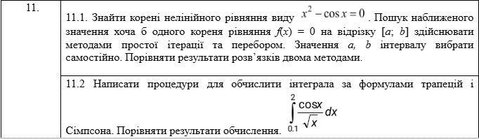
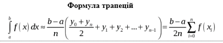
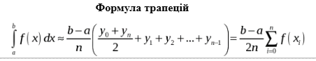
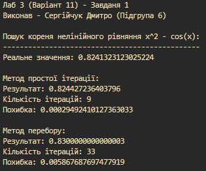
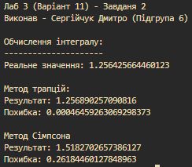
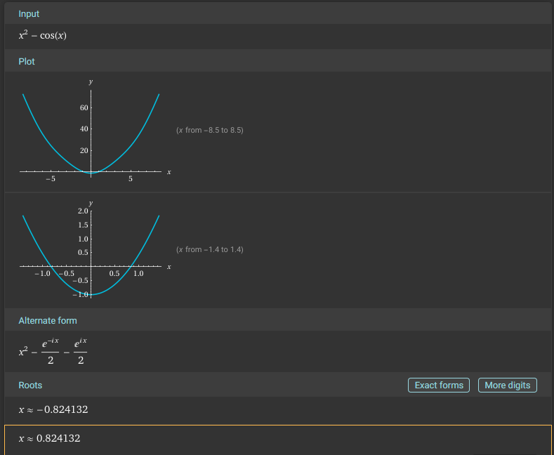
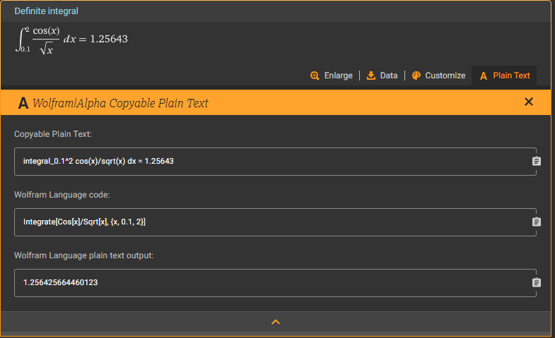

Мета
Розв’язати нелінійні рівняння та здійснити чисельне інтегрування функцій наближеними методами, використовуючи мови функціонального програмування та lambda, let та set! форми.
Умова
 

Аналіз
Завдання 1
Для реалізації методу перебору необхідно вказати проміжок [a; b] та крок зміни. Суть даного ітераційного метода полягає в тому, що ми поступово збільшуємо значення a на значення кроку, поки не досягнемо значення b. На кожній ітерації множимо поточне значення a на попереднє, якщо результат менший за 0, то це означає, що між цими точками знаходиться корінь рівняння
Метод простої ітерації потребує визначення початкової точки, а також точності вимірювання. Для цього метода потрібно перетворити формулу до вигляду: x = φ(x), у нашому випадку, формула з умови перетвориться до такого вигляду: x = √(cos(x)). На кожній ітерації знаходиться модуль різниця між попереднім значенням x та новим nex-x (обчислюється як результат передачі x до функції), якщо це значення менше за вказану точність, то повертається new-x, інакше - ітераційний процес продовжується, де до значення x записується new-x.
Завдання 2
Для реалізації методу трапецій потрібно вказати кількість відрізків n - це значення буде визначати точність обчислення. Інтервал інтегралу [a; b] розбивається на n значень, які передається до функції інтегралу. Кожне значення, де x ∈ [1, n - 1] множиться на 2. Всі отримані значення сумуються між собою, після чого множаться на (b - a)/2n
HIPO Діаграма
Код
Code: Task1
#lang racket
(displayln "Лаб 3 (Варіант 11) - Завданя 1")
(displayln "Виконав - Сергійчук Дмитро (Підгрупа 6)")
(newline)
(define (f x)
(- (expt x 2) (cos x)))
(define (g x)
(sqrt (cos x)))
(define (fixed-point-iteration func x precision [max-iter 1000])
(set! iterations (+ iterations 1))
(let* ([new-x (func x)]
[diff (abs (- new-x x))])
(if (or (<= diff precision) (>= iterations max-iter))
new-x
(fixed-point-iteration func new-x precision))))
(define (brute-force func a b step)
(set! iterations (+ iterations 1))
(let* ([new-a (+ a step)]
[res1 (func a)]
[res2 (func new-a)]
[multiplication-result (* res1 res2)])
(if (< multiplication-result 0)
new-a
(brute-force func new-a b step))))
(displayln "Пошук кореня нелінійного рівняння x^2 - cos(x):")
(displayln "-----------------------------------------------")
(define ANSWER 0.82413231230252242296)
(printf "Реальне значення: ~a\n\n" ANSWER)
(define iterations 0)
(define fixed-point-result (fixed-point-iteration g 0 0.001))
(define fixed-point-result-error (abs (- fixed-point-result ANSWER)))
(displayln "Метод простої ітерації:")
(printf "Результат: ~a\nКількість ітерацій: ~a\nПохибка: ~a\n\n" fixed-point-result iterations fixed-point-result-error)
(set! iterations 0)
(define brute-force-result (brute-force f 0.5 1 0.01))
(define brute-force-result-error (abs (- brute-force-result ANSWER)))
(displayln "Метод перебору:")
(printf "Результат: ~a\nКількість ітерацій: ~a\nПохибка: ~a\n\n" brute-force-result iterations brute-force-result-error)
Code: Task 2
#lang racket
(displayln "Лаб 3 (Варіант 11) - Завданя 2")
(displayln "Виконав - Сергійчук Дмитро (Підгрупа 6)")
(newline)
(define (integral-func x)
(/ (cos x) (sqrt x)))
(define (trapezoidal-rule func a b n)
(let* ([range (- b a)]
[step (/ range n)])
(define calc-sum (lambda (sum current max)
(if (< current max)
(calc-sum (+ sum (* 2 (func current))) (+ current step) max)
sum)))
(* (/ range (* 2 n)) (+ (func a) (calc-sum 0 (+ a step) (- b step)) (func b)))))
(define (simpsons-rule func a b)
(let ([h (/ (- b a) 2)])
(* (/ h 3) (+ (func a) (* 4 (func (+ a h))) (func b)))))
(displayln "Обчислення інтегралу:")
(displayln "---------------------")
(define ANSWER 1.256425664460123)
(printf "Реальне значення: ~a\n\n" ANSWER)
(define A 0.1)
(define B 2)
(define trapezoidal-result (trapezoidal-rule integral-func A B 100))
(define trapezoidal-result-error (abs (- trapezoidal-result ANSWER)))
(displayln "Метод трапцій:")
(printf "Результат: ~a\nПохибка: ~a\n\n" trapezoidal-result trapezoidal-result-error)
(define simpsons-rule-result (simpsons-rule integral-func A B))
(define simpsons-rule-result-error (abs (- simpsons-rule-result ANSWER)))
(displayln "Метод Сімпсона")
(printf "Результат: ~a\nПохибка: ~a" simpsons-rule-result simpsons-rule-result-error)
Результати
Завдання 1
Для порівняння результатів використовується кількість виконаних ітерацій та порівнянння з реальним значенням
Завдання 2
Для порівняння результатів використовується порівнянння з реальним значенням інтегралу
Перевірка
Завдання 1
Для отримання реального значення кореня, для перевірки отриманих результатів, було використано даний сайт.
Завдання 2
Для отримання реального значення інтегралу, для перевірки отриманих результатів, було використано даний сайт.
Перевірка коду ШІ
Завдання 1
Введний запит: "чи відповідає даний код на мові програмування racket критеріям простоти та clean code? (код завдання №1)"
Відповідь Chat GPT
✅ Плюси:
- Прості та зрозумілі функції f і g — коротко і без зайвого коду.
- Видно структуру програми: спочатку функції, потім основна логіка з викликами, в кінці — вивід результатів.
- Використано іменовані параметри (наприклад, [max-iter 1000] із значенням за замовчуванням).
- Код лаконічний — немає надто довгих виразів чи дублювання
⚠️ Мінуси з погляду clean code:
-
Глобальна змінна iterations:
- Ти використовуєш set! iterations усередині рекурсивних функцій. Це робить функції нечистими (вони змінюють зовнішній стан).
- У функціональних мовах, і зокрема у Racket, краще повертати кількість ітерацій разом із результатом, а не використовувати глобальну змінну.
- Через це функції важче тестувати ізольовано
-
Назви функцій і змінних:
- res1, res2, multiplication-result можна зробити більш семантичними (наприклад, fa, fb, sign-change).
-
Дублювання логіки:
- І в fixed-point-iteration, і в brute-force є підрахунок ітерацій і рекурсія з новим параметром. Це можна було б винести в окремий "хелпер" або ж реалізувати через локальні функції (let loop), без глобальної змінної.
-
Стиль:
- Місцями зайві порожні рядки
- displayln і printf впереміш — краще уніфікувати стиль виводу
🔄 Як можна зробити чистіше (і більш "функціонально"):
Замість глобальної змінної iterations, можна робити так:
Code
(define (fixed-point-iteration func x precision [max-iter 1000])
(let loop ([x x] [iter 0])
(let* ([new-x (func x)]
[diff (abs (- new-x x))])
(if (or (<= diff precision) (>= iter max-iter))
(values new-x iter) ; повертаємо і результат, і кількість ітерацій
(loop new-x (add1 iter))))))
І потім викликати:
Code
(define-values (fixed-point-result iterations)
(fixed-point-iteration g 0 0.001))
Те ж саме для brute-force.
🔚 Висновок
Код у тебе простий і зрозумілий для початкового рівня, але з точки зору clean code у Racket є проблеми:
- глобальна змінна iterations,
- нечисті функції
- кілька не дуже вдалих назв
- дрібні стилістичні неточності
Якщо зробити рекурсію "чистою" (через внутрішній цикл loop) і уникати глобальних змінних, код буде відповідати функціональному стилю та вважатись clean
Завдання 2
Введний запит: "чи відповідає даний код на мові програмування racket критеріям простоти та clean code? (код завдання №2)"
✅ Що добре:
- Функції мають зрозумілі назви: integral-func, trapezoidal-rule, simpsons-rule. Це одразу пояснює, що вони роблять
- Мінімум глобальних змінних: усі обчислення виконуються через функції, без set! чи змінювання стану.
- Функції короткі й роблять одну задачу — це відповідає принципу single responsibility
- Чітка структура коду: спочатку визначення функцій, далі — вивід результатів
⚠️ Моменти для покращення:
-
Стиль рекурсії в trapezoidal-rule
Ти використав define calc-sum як рекурсивну лямбду всередині let*. Це працює, але виглядає трохи заплутано. У Racket прийнято робити локальні рекурсивні функції через let loop, щоб було зрозуміло, що це саме цикл. Наприклад
Code(let loop ([sum 0] [current (+ a step)]) (if (< current (- b step)) (loop (+ sum (* 2 (func current))) (+ current step)) sum))Це читабельніше й звичніше для Racket
-
Назви змінних
- range краще назвати interval або width, бо range часто асоціюється з колекціями (послідовностями).
- calc-sum звучить як функція в загальному сенсі, але насправді це конкретна локальна рекурсія. Краще loop чи sum-loop.
-
Вивід результатів (displayln + printf)
- Ти змішуєш displayln і printf. Це не помилка, але для чистоти стилю краще вибрати один підхід.
- Якщо хочеш красиве форматування → краще всюди printf. Якщо простий вивід тексту → всюди displayln
-
Структура програми
- Було б чистіше винести вивід результатів у окрему функцію, наприклад print-results, щоб розділити логіку обчислень і вивід
🔄 Як можна зробити ще чистіше
Ось твій код трохи перероблений у стилі "clean Racket":
Code
#lang racket
(define (integral-func x)
(/ (cos x) (sqrt x)))
(define (trapezoidal-rule func a b n)
(define step (/ (- b a) n))
(define (loop sum current)
(if (< current (- b step))
(loop (+ sum (* 2 (func current))) (+ current step))
sum))
(* (/ (- b a) (* 2 n))
(+ (func a) (loop 0 (+ a step)) (func b))))
(define (simpsons-rule func a b)
(define h (/ (- b a) 2))
(* (/ h 3)
(+ (func a) (* 4 (func (+ a h))) (func b))))
(define (print-result name value exact)
(define error (abs (- value exact)))
(printf "~a:\n Результат: ~a\n Похибка: ~a\n\n" name value error))
;; --- Основна програма ---
(displayln "Обчислення інтегралу:")
(displayln "---------------------")
(define ANSWER 1.256425664460123)
(printf "Реальне значення: ~a\n\n" ANSWER)
(define A 0.1)
(define B 2)
(print-result "Метод трапецій"
(trapezoidal-rule integral-func A B 100)
ANSWER)
(print-result "Метод Сімпсона"
(simpsons-rule integral-func A B)
ANSWER)
🔚 Висновок
Твій код загалом відповідає принципам простоти і clean code — він зрозумілий, не перевантажений і не використовує глобальних змінних. Але є простір для вдосконалення: чистіша рекурсія через let loop, узгоджений стиль виводу, кращі назви змінних і винесення виводу в окрему функцію.
Висновок
Під час виконання даної роботи було продемонстровано роботу з let, let*, set! та lamda.
Функції let та let* зручно використовувати для оголошення внутрішніх змінних в тілі функцій. Відмінність let від let* заключається в тому, що якщо ми оголошуємо декілька змінних одночасно, і нам необхідно використовувати значення попердніх змінних, то у звичайному let це можливо лише з використанням вкладених let. В let* ми маємо доступ до попередніх змінних
Функція set! призначена для перевизначення значення змінної. В даній роботі вона використовується для перевизначення глобальної змінної iterations, яка використовується в 1 завданні для зберігання кількості ітерацій, які було виконано кожним методом
Ключове слово lambda довзоляє визначити анонімні функції. Це зручно використовувати при передачі функцій, як аргументів функцій, але в даній роботі це не було використано